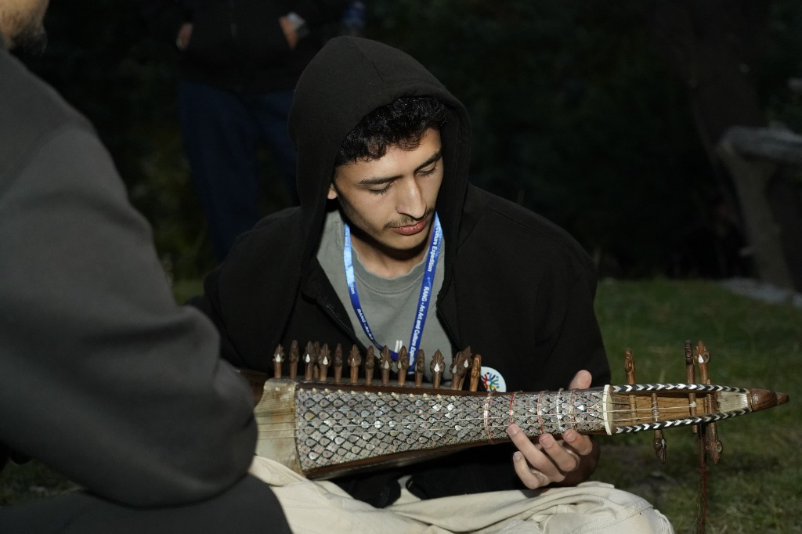

Kashan Ali
I'm AI/ML Engineer
About
I am pursuing a Bachelor of Science in Computer Science at NUST, focusing on 3D computer vision, backend architecture, and full-stack software engineering. Much of my work is rooted in cultural preservation around my home region of Chitral, Pakistan — combining modern computer science with community impact.
AI/ML, 3D Vision & Full-Stack Engineer.
From reconstructing historical sites in 3D to engineering low-latency archival platforms, I build software that solves practical technical challenges while preserving local heritage.
- Location: H-12, Islamabad, Pakistan
- Phone: +92-344874333-2
- Email: kashanali.akhsss@gmail.com
- Birthday: 14 July 2007
- University: NUST (Expected 2029)
- Degree: BS Computer Science
- LinkedIn: linkedin.com/in/kashan-ali-khan
- GitHub: github.com/Kashan-A1i
I build things that preserve what matters and give back to my community — from 3D Gaussian Splatting walkthroughs of archaeological sites to digital archives for local folklore, poetry, and music, so stories and sounds from home don't get lost. Away from the screen, I'm usually in a Blender scene or working out a piece on the rubab.
Skills
Core technologies, developer tooling, and engineering concepts across my work.
Languages & Frameworks
- Python
- Java
- C++
- C
- JavaScript
- TypeScript
- React
- Next.js
- Node.js
- Vue
- Django
- SQL
- PyTorch
- TensorFlow
- OpenCV
Tools & Practices
- Git
- Linux
- Docker
- Supabase
- COLMAP
- 3D Gaussian Splatting
- REST APIs
Core Concepts
- 3D Computer Vision
- Photogrammetry
- Machine Learning
- Reinforcement Learning
- Data Structures & Algorithms
3D & Digital Media
- Blender (3D Modeling & Animation)
- Adobe Photoshop
- Adobe After Effects
- SDL Game Programming
Projects
End-to-end engineering across 3D computer vision, backend architecture, and cultural preservation platforms.
Virtual Heritage Tour
In Progress- Developed an end-to-end 3D reconstruction pipeline to convert ground-level video recordings and still photography of archaeological sites into real-time interactive walkthroughs.
- Extracted and preprocessed video frames using OpenCV to eliminate motion-blurred captures and normalize input sequences.
- Leveraged Structure-from-Motion (SfM) via COLMAP to perform feature matching, solve camera intrinsics/extrinsics, and generate initial sparse point clouds.
- Trained 3D Gaussian Splatting (3DGS) representations to achieve photorealistic novel view synthesis and high-frame-rate rendering of intricate historical masonry.
Qasida — Media Archival & Content Extraction
View Project- Architected a normalized relational schema to index multilingual poetic texts, media links, and metadata with low-latency search querying.
- Implemented an asynchronous background ingestion pipeline for image uploads, utilizing OCR and image preprocessing to extract lyrics automatically.
- Designed a lightweight hypermedia architecture (Django + HTMX) for real-time state synchronization and partial updates, minimizing server payload overhead.
- Optimized database indexing to support fast multilingual search across varied scripts and verse structures.
Mastuj Chitral
View Project- Attracted 1,200+ visitors in the first 3 months by building a Next.js, React, and Supabase website showcasing articles, attractions, and travel guides with Urdu, English, and Khowar multilingual support.
- Improved user experience with a responsive Tailwind CSS design and a Supabase-authenticated dashboard for content management.
Bashonu
View Project- Shipped a full-stack website utilizing React for the frontend and JavaScript for server-side logic, focusing on user interface design.
- Integrated Supabase backend for scalable data management with efficient storage, retrieval, and real-time updates.
Ishlogh
View Project- Built a folklore and stories preservation platform with cloud media storage, keeping regional oral narratives accessible for future generations.
- Integrated Backblaze cloud storage with a Django backend for reliable media hosting and archival management.
Education
National University of Science and Technology
H-12, Islamabad
Bachelor of Science in Computer Science | GPA: 3.16 | Expected 2029
Relevant Coursework: Artificial Intelligence, Machine Learning, Data Structures and Algorithms, Operating Systems, Computer Architecture, Database Management Systems
Aga Khan Higher Secondary School
Seenlasht, Chitral
Pre-Engineering | Grade: A-1 | 2020 – 2025
Secured Provincial 1st position in Pre-Engineering board examinations. Recognized as Subject High Achiever in Mathematics and Physics (HSSC-II).
Achievements
Academic excellence and hands-on innovation recognized through provincial and institutional awards.
Leadership & Awards
Leadership & Civic Engagement
President, Science and Arts Club
2021 – 2023
- Led club activities in visual design, 3D modeling, and digital content creation for institutional events and exhibitions.
- Secured 1st place in the 2023 Science & Art Exhibition by designing and programming an Arduino-controlled, height-adjustable bridge with flood-mitigation sensors.
Ismaili Volunteer (IV)
2015 – Present
- Spearheaded community clean-up initiatives and coordinated civic engagement events.
- Fostered environmental awareness and supported local community programs.
Management, Events & Honors
Organizing Committee Member, PYC-MUN
- Managed logistics, stall setups, and participant coordination for over 500 attendees.
Organizer, Quiz Competition
- Coordinated event planning and session flows for large-scale student academic competitions.
Academic Honors & Scholarships
- Provincial High Achiever, Pre-Engineering: Secured 1st position in Pre-Engineering board examinations.
- Subject High Achiever: Recognized in Mathematics and Physics (HSSC-II) by the Aga Khan Education Service.
- Jenabai Award & Bridge Scholarship: Awarded for top academic standing.
Resume
Want to see the full picture? View my complete CV with all details.